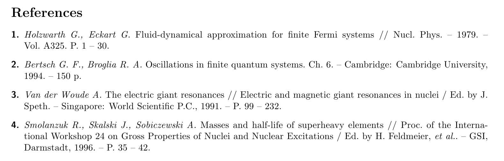

The following example is taken from a question posted at http://tex.stackexchange.com/questions/147675/bibtex-scientific-style-with-pages-at-the-end. The OP asks:
Where can I find bibtex style, which looks approximately like this? Somehow all styles (even science.bst), which I find use format.vol.num.pages function, which put pages right after volume number. But the order I used to see and use is volNum-year-pages. I can simply move the line format.date "year" output.check into format.vol.num.pages, but 1. I am not sure whether this is correct (looks strange for me), 2. I don’t know how to add the --- sign in front.

With Bibulous, we can easily provide templates that provide the formatting that the OP asks for::
TEMPLATES:
article = \textit{<au>} <title> // <journal> -- <year>. -- Vol.~<volume>. P.~[<startpage> -- <endpage>|<startpage>|<eid>|].
book = \textit{<au>} <title>. [Ch.~<chapter>. ]-- <address>: <publisher>, <year>.[ -- <startpage>~p.]
inbook = \textit{<au>} <title> // <booktitle>[ / Ed. by <ed.if_singular(editorlist, nothing, etal_message)>]. -- <address>: ...
<publisher>, <year>.[ -- P.~<startpage> -- <endpage>| -- P.~<startpage>| -- P.~<eid>|].
inproceedings = \textit{<au>} <title> // <booktitle>[ / Ed. by <ed.if_singular(editorlist, nothing, etal_message)>]. -- ...
<publisher>, <address>, <year>. -- P.~[<startpage> -- <endpage>|<startpage>|<eid>|].
SPECIAL-TEMPLATES:
authorlist = <author.to_namelist()>
editorlist = <editor.to_namelist()>
authorname.n = [<authorlist.n.prefix> ]<authorlist.n.last>[ <authorlist.n.first.initial()>.][ <authorlist.n.middle.initial()>.][, <authorlist.n.suffix>.]
au = <authorname.0>, ..., <authorname.9>
ed = [<editorlist.0.first.initial()>. ][ <editorlist.0.middle.initial()>. ][<editorlist.0.prefix> ]<editorlist.0.last>[, <editorlist.0.suffix>.]
OPTIONS:
nothing = {}
so that if we use this template together with the following database file:
@article{Holzwarth,
author = {G. Holzwarth and G. Eckart},
title = {Fluid-dynamical approximation for finite Fermi systems},
journal = {Nucl. Phys.},
year = 1979,
volume = {A325},
pages = {1-30}
}
@book{Bertsch,
author = {G. F. Bertsch and R. A. Broglia},
title = {Oscillations in finite quantum systems},
chapter = 6,bibulous
address = {Cambridge},
publisher = {Cambridge University},
year = 1994,
pages = 150
}
@inbook{Woude,
author = {A. Van der Woude},
title = {The electric giant resonances},
booktitle = {Electric and magnetic giant resonances in nuclei},
editor = {J. Speth},
address = {Singapore},
publisher = {World Scientific P.C.},
year = 1991,
pages = {99-232}
}
@inproceedings{Smolanzuk,
author = {R. Smolanzuk and J. Skalski and A. Sobiczewski},
title = {Masses and half-life of superheavy elements},
booktitle = {Proc.\ of the International Workshop 24 on Gross Properties of Nuclei and Nuclear Excitations},
editor = {H. Feldmeier and others},
address = {Darmstadt},
publisher = {GSI},
year = 1996,
pages = {35-42}
}
then we get the formatted result shown below
The next example is taken from the bibliography style found in: Dimitri Mihalas and James Binney, _Galactic Astronomy: Structure and Kinematics_, 2nd ed. (W. H. Freeman, New York, 1981). A snapshot from the the book’s bibliography looks like

To produce this style, we can define the following templates::
TEMPLATES:
article = <au> <year>. \textit{<journal>} \textbf{<volume>}:<pages>.
book = [<au>|<ed.if_singular(editorlist, eds_msg1, eds_msg2)>|]. <year>. \textit{<title>}. (<address>: <publisher>).
proceedings = book
phdthesis = <au> <year>. Ph.D. Thesis, <university>.
SPECIAL-TEMPLATES:
authorlist = <author.to_namelist()>
editorlist = <editor.to_namelist()>
authorname.n = [<authorlist.n.prefix> ]<authorlist.n.last>[, <authorlist.n.first.initial()>.][ <authorlist.n.middle.initial()>.][, <authorlist.n.suffix>.]
au = <authorname.0>, ...,{ and }<authorname.9>
editorname.n = [<editorlist.n.prefix> ]<editorlist.n.last>[, <editorlist.n.first.initial()>.][ <editorlist.n.middle.initial()>.][, <editorlist.n.suffix>.]
ed = <editorname.0>, ...,{ and }<editorname.5>
authorlabel = [<authorlist.0.prefix>|<authorlist.0.last>]
editorlabel = [<editorlist.0.prefix>|<editorlist.0.last>]
sortkey = [<authorlabel><year>|<editorlabel><year>]
citelabel = (<sortkey.initial()>)
OPTIONS:
eds_msg1 = { }(ed.)
eds_msg2 = { }(eds.)
use_citeextract = False
so that with the following database file:
@book{Blaauw1965,
editor = {A. Blaauw and M. Schmidt},
title = {Galactic Structure},
address = {Chicago},
publisher = {University of Chicago Press},
year = 1965
}
@article{Bok1977,
author = {B. J. Bok},
journal = {Publ. Astron. Soc. Pacific},
year = 1977,
volume = 89,
pages = 597
}
@phdthesis{Bosma1978,
author = {A. Bosma},
university = {University of Groningen, Netherlands},
year = 1978
}
@article{Burke1957,
author = {B. F. Burke},
journal = {Astron. J.},
year = 1957,
volume = 62,
pages = 90
}
@article{Burton1970,
author = {W. B. Burton},
journal = {Astron. and Astrophys.},
year = 1970,
volume = 10,
pages = 76
}
@article{Burton1972,
author = {W. B. Burton},
journal = {Astron. and Astrophys.},
year = 1972,
volume = 19,
pages = 51
}
@article{Burton1976,
author = {W. B. Burton},
journal = {Ann. Rev. Astron. and Astrophys.},
year = 1976,
volume = 14,
pages = 275
}
@article{Burton1978,
author = {W. B. Burton and M. A. Gordon},
journal = {Astron. and Astrophys.},
year = 1978,
volume = 63,
pages = 7
}
@book{Chiu1970,
editor = {H.-Y. Chiu and A. Muriel},
title = {Galactic Astronomy},
year = 1970,
address = {New York},
publisher = {Gordon and Breach}
}
@article{Cohen1976,
author = {R. J. Cohen and R. D. Davies},
journal = {Mon. Not. Roy. Astron. Soc.},
year = 1976,
volume = 175,
pages = 1
}
@article{Dickman1978,
author = {R. L. Dickman},
journal = {Astrophys. J. Supp.},
year = 1978,
volume = 37,
pages = 407
}
@article{Emerson1978,
author = {D. T. Emerson},
journal = {Astron. and Astrophys.},
year = 1978,
volume = 63,
pages = {L29},
}
@inproceedings{Fichtel1977,
editor = {C. E. Fichtel and F. W. Stecker},
booktitle = {The Structure and Content of the Galaxy and Galactic Gamma Rays},
address = {Washington, D.C.},
publisher = {NASA},
year = 1977
}
we get the following formatted result
This follows an online question posted at http://tex.stackexchange.com/questions/961/bibtex-style-that-groups-by-author.